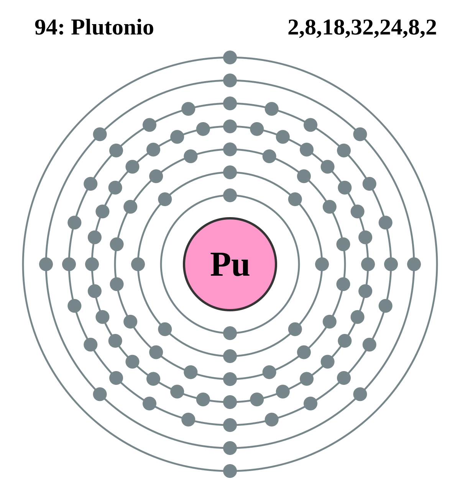

|
|
||
|
PLUTONIO Plutonio, de símbolo Pu, es un elemento metálico radiactivo que se utiliza en reactores y armas nucleares. Su número atómico es 94. Es uno de los elementos transuránicos del grupo de los actínidos del sistema periódico. Su nombre deriva del planeta enano Plutón. El plutonio muestra diversos estados de valencia en solución y en estado sólido. El plutonio metálico es muy electropositivo. Se han preparado muchas aleaciones de plutonio y se han caracterizado gran número de compuestos intermetálicos. El plutonio es descrito a veces en los medios como la sustancia más tóxica conocida por los humanos, aunque hay acuerdo general entre los expertos en este campo de que esto es incorrecto. Hasta el 2003 todavía no ha habido ninguna muerte humana oficialmente atribuida a la exposición al plutonio. |
 |
DATOS Número Atómico: 94 Peso Atómico: 244.0642 Electronegatividad: 1.28 Configuración Electrónica:[Rn]5f67s2 Estados de Oxidación: +3,+4,+5,+6,+7 No. de Electrones de Valencia: --- |